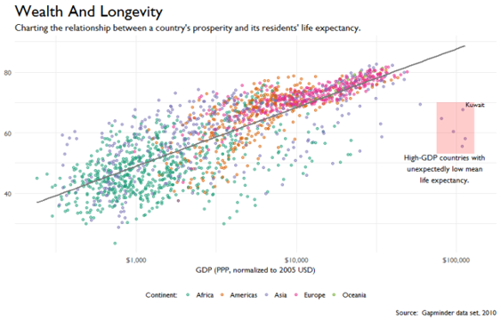
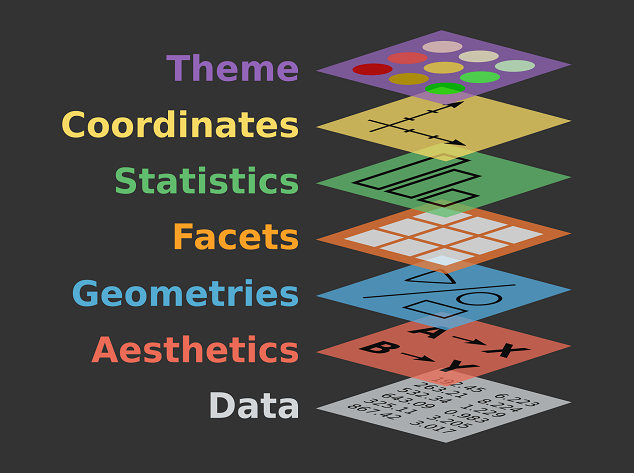

Grokking the Grammar of Graphics
Kevin Feasel (@feaselkl)http://CSmore.info/on/ggplot
Who Am I? What Am I Doing Here?


Level Setting
What I expect you to know:
- R is a language focused around performing statistical analysis, predictive modeling, and data cleansing.
- R has a built-in plotting library which allows you to create rudimentary graphics.
- Those graphics tend not to look very nice.
Level Setting
By the end of today's talk, we will be able to build the following image:
Level Setting
- Multi-colored scatter plot and regression line
- Title, subtitle, log axis, source ref, legend
- Callout box with text and single labeled point
Motivation
My goals in this talk:
- Introduce you to the Grammar of Graphics.
- Introduce you to the ggplot2, an advanced library in R which implements the Grammar of Graphics.
- Show you how to build professional-looking graphics iteratively.
- Get you thinking about ways you could create great-looking visuals in your environment.
Agenda
- Introducing the Grammar
- Mappings and Geoms
- Scales and Coordinates
- Labels and Annotations
- Themes and Legends
- Facets
Introducing the Grammar
Leland Wilkinson wrote The Grammar of Graphics in 1999 (2nd edition in 2005).
A grammar of graphics, like a language's grammar, gives us an idea of what is syntactically correct--even if not every graphic is semantically correct.
Introducing the Grammar
The core insight behind a grammar is that a great image is composable (in the programming sense): there are components which make up this image. Generalizing these components lets us piece together images rather than trying to produce them fully-formed.
This lets us use a relatively small number of components to create an indefinite number of possible graphics.
The Components
The Components
Breaking it down slightly differently:
- The data itself, and a mapping made up aesthetics like x axis, y axis, color, fill color, and so on.
- The geometric object (aka, geom) we want to draw, like histogram or line chart.
- Scales and coordinates.
- Data labels and annotations.
- Facets, that is, splitting into multiple graphs.
An Implementation: ggplot2
The ggplot2 library in R is an implementation of the Grammar of Graphics (that's the "gg" in ggplot). ggplot2 is an extensible, powerful library for creating graphics.
It is also an opinionated library: certain types of graphics are easy to generate (such as bar and column charts, line charts, and Cleveland dot plots) but others (pie charts, radar charts) are much more difficult.
Agenda
- Introducing the Grammar
- Mappings and Geoms
- Scales and Coordinates
- Labels and Annotations
- Themes and Legends
- Facets
Mappings
The purpose of a visual is to display some underlying set of data. We represent this data, at its base, in the mapping. The mapping contains an aesthetic which includes things like variables for the x and y coordinates, fill variable, and grouping variable.
Every meaningful ggplot2 graphic will have a mapping.
Geoms
Geometric objects (AKA geoms) explain what kind of visual we want to create. For example, geom_col() allows us to create a column (or bar) chart, geom_point() allows us to build a scatter plot, geom_line() a line chart, and so on.
The grammar of graphics is all about composition: you can have multiple geometric objects on the same canvas, like including a slope line with your scatter plot. This is a lot more powerful than having geom_point_with_slope_line.
Demo Time
Agenda
- Introducing the Grammar
- Mappings and Geoms
- Scales and Coordinates
- Labels and Annotations
- Themes and Legends
- Facets
Scales
By default, an axis is scaled linearly. You can manually rescale the data (for example, generating the logarithm of your values and plotting that), but ggplot2 has some built in scalars, for example, scale_x_log10() which performs a log base-10 transformation of your X axis. There is a similar scalar for the Y axis, too.
Aside from scaling the axis values, you can also use different features like color, transparency level, and size as scalars given your data.
Coordinates
You can change coordinate systems from the default of Cartesian to others, including polar. You can also flip the X and Y coordinates with coord_flip(), which allow you to change geom_col() from a column chart to a bar chart.
Demo Time
Agenda
- Introducing the Grammar
- Mappings and Geoms
- Scales and Coordinates
- Labels and Annotations
- Themes and Legends
- Facets
Labels
We can change the labels showing up on the X and Y axes, add a title or subtitle, create captions, and even specify the header on a legend. The `labs()` function in ggplot2 allows us to specify all of these.
Annotations
Annotations let us call out specific portions of a visual. We can, for example, drop in explanatory text, call out a specific data point, or even add shapes to our visuals, like a rectangle to cover a subset of data points.
The annotate() function handles annotations. In addition, there are several geoms which are helpful for annotation: geom_text(), geom_hline(), and geom_vline().
Demo Time
Agenda
- Introducing the Grammar
- Mappings and Geoms
- Scales and Coordinates
- Labels and Annotations
- Themes and Legends
- Facets
Legends
We can change the legend in a graphic using the guides() function. This will allow us to do things like moving the legend to a particular part of the canvas (top, bottom, left, right), make the legend vertical or horizontal, set the title, and so on.
When you do need to put a legend on your visual, it's good to have this kind of control to minimize how obtrusive the legend is.
Built-In Themes
ggplot2 has four built-in themes: theme_grey() (the default), theme_bw(), theme_classic(), and theme_minimal() (my preference).
GGThemes
The ggthemes package includes a number of pre-built themes. Some of my favorites include theme_economist(), theme_wsj(), theme_fivethirtyeight(), and theme_few().
Custom Themes
You can even build your own themes if you have corporate or editorial standards, or if you want to spice up an existing theme. Using the theme() function, you can change most visual aspects of the theme, including font shape, size, and weight; canvas coloration; tick marks; and more.
Demo Time
Agenda
- Introducing the Grammar
- Mappings and Geoms
- Scales and Coordinates
- Labels and Annotations
- Themes and Legends
- Facets
Facets
Facets allow us to display multiple graphs within one visual. We can wrap graphs using the facet_wrap() function or lay them out on a grid using the facet_grid() function.
Faceting is useful for separating out interactions between variables in a complex graphic. It can also let you bring two unrelated graphics together if needed.
Demo Time
Wrapping Up
The Grammar of Graphics is a fantastic way of abstracting complex visuals into simpler component parts. ggplot2 is the most popular implementation of the Grammar of Graphics in R, and for good reason: it allows us programmatically to build complex graphics in an iterative fashion with relatively few lines of code
Wrapping Up
To learn more, go here:
https://CSmore.info/on/ggplot
And for help, contact me:
feasel@catallaxyservices.com | @feaselkl
Catallaxy Services consulting:
https://CSmore.info/on/contact